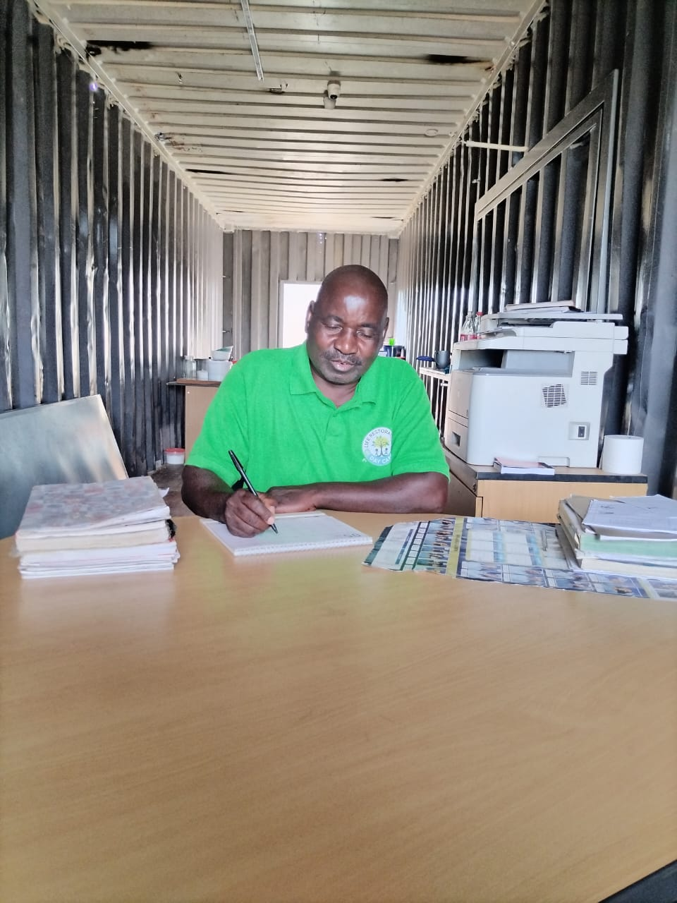

Below is all you need to know about Life Restoration Day Care.
Our Purpose
Vision Statement
To provide a nurturing English-medium environment that inspires financial support and community growth through quality education and professional care, developing children holistically.
Mission Statement
To be a cornerstone of restoration in our community, ensuring every child has the linguistic and educational foundation to succeed in the modern world.
Our Mission
- Deliver quality early English-medium learning programmes.
- Ensure child safety and protection.
- Support families and communities.
- Promote physical, emotional, cognitive and social development.
Our Dedicated Staff
The Principal

Name: Simon Hove
Role: Principal & Founder

Name: Thakhalo Ngwenya
Role: Teacher

Name: Thandi Moretsele
Role: Teacher

Name: Nomsa Mokone
Role: Teacher

Name: Phindile Nkosi
Role: School Cook
Brief History
Life Restoration Day Care is an English-Medium Day Care and community-based Non-Profit Organisation (NPO) established in 2026 to provide high-quality Early Childhood Development (ECD) and after-school support in Ngwaabe. Our foundation is built on the need to provide professional educational oversight while restoring hope within the families of our community.
Policies
As a registered NPO, we maintain strict adherence to Department of Social Development standards. Our policies ensure a safe, English-speaking environment where discipline is handled with care, and child safety is our highest priority.
- English-Only Language Policy during learning hours.
- Strict Child Pick-up & Safety Protocol.
- Healthy Nutrition and Hygiene Standards.